作成日: 2026-04-13
対象: サイト運用担当者 / 更新担当者
対象サイト: Rinascente コーポレートサイト / YUMEHO
製品サイト
スクリーンショット: 管理画面で撮影
このマニュアルは、現在の WordPress
管理画面で実際に更新できる箇所を、画面単位で細かく整理した運用用マニュアルです。
特に重要なのは、「固定ページを開けても、本文を編集しても見た目が変わらないページがある」
ことです。更新先を間違えないよう、まずは次の 3
点を先に確認してください。
| 更新したい内容 | 管理画面の場所 | 反映先 | 反映タイミング | 補足 |
|---|---|---|---|---|
| 導入事例 | 導入事例 |
導入事例一覧 / 詳細 / トップの事例訴求 | 通常は保存後すぐ | 一番よく使う更新画面 |
| FAQ本文 | FAQ |
FAQページ / トップFAQ | 通常は保存後すぐ | 質問1件ごとに1投稿 |
| FAQページ導入文 | 固定ページ > FAQ |
FAQページ上部 | 通常は保存後すぐ | FAQ投稿とは別 |
| 導入拠点 | 導入拠点 |
全国マップ / 導入件数表示 | 通常は保存後すぐ | 住所から地図座標を生成 |
| 価格の確認 | サイト更新 > 価格参照（Rinascente編集） |
参照のみ | 参照のみ | 実際の編集は Rinascente 側 |
| 価格・見積・シミュレーションの元データ | Rinascente > 製品マスター |
YUMEHO 価格 / 見積 / シミュレーション | 最大約15分 | YUMEHO側では編集しない |
| 会社概要の会社情報 | Rinascente > 会社概要 |
YUMEHO 会社概要ページ | 通常は保存後すぐ | YUMEHO 側固定ページ本文ではない |
| 画像・PDFなどのアップロード | メディア |
各投稿・固定ページで使用 | すぐ利用可能 | 画像差し替えの共通入口 |
| プライバシーポリシー | 固定ページ |
該当ページ | 通常は保存後すぐ | 本文編集がそのまま反映 |
| 利用規約 | 固定ページ |
該当ページ | 通常は保存後すぐ | 本文編集がそのまま反映 |
| 特定商取引法に基づく表記 | 固定ページ |
該当ページ | 通常は保存後すぐ | 本文編集がそのまま反映 |
| 更新したい内容 | 管理画面の場所 | 反映先 | 反映タイミング | 補足 |
|---|---|---|---|---|
| ニュース | ニュース |
Press / ニュース詳細 / トップ掲載 | 通常は保存後すぐ | Featured は1件のみ強調表示 |
| コラム | コラム |
コラム一覧 / 詳細 | 通常は保存後すぐ | YUMEHO 連携設定あり |
| YUMEHOにも出すコラム | コラム の連携設定 |
YUMEHO コラム一覧 / 詳細 | 最大約15分 | REST連携 + キャッシュあり |
| 会社情報 / サポート窓口 | 会社概要 |
Rinascente 会社情報 / YUMEHO会社概要 | 通常は保存後すぐ | 両サイト共通の元データ |
| 製品マスター | 会員サイト運用 > 製品マスター |
YUMEHO価格 / 見積 / 契約テンプレート | 最大約15分 | 価格の元管理画面 |
| 契約・購入履歴 | 会員サイト運用 > 契約・購入履歴 |
会員ページの契約表示 | 通常は保存後すぐ | 会員別の履歴管理 |
| 会員限定動画 | 会員サイト運用 > 会員限定動画 |
会員ページ | 通常は保存後すぐ | YouTube URL / ID を登録 |
| 会員限定資料 | 会員サイト運用 > 会員限定資料 |
会員ページ | 通常は保存後すぐ | PDF等の配布資料 |
| サポート情報 | 会員サイト運用 > サポート情報 |
会員ページ | 通常は保存後すぐ | お知らせ・重要情報 |
| プライバシーポリシー | 固定ページ |
該当ページ | 通常は保存後すぐ | 本文編集がそのまま反映 |
| 利用規約 | 固定ページ |
該当ページ | 通常は保存後すぐ | 本文編集がそのまま反映 |
| アナリティクス / 連携URL | 外観 > カスタマイズ |
サイト全体 | 保存後すぐ | 管理者向けの全体設定 |
| 項目 | 状態 | 対応方法 |
|---|---|---|
| YUMEHO 製品紹介ページ本文 | テンプレート固定 | 開発者へ依頼 |
| YUMEHO 導入の流れページ | テンプレート固定 | 開発者へ依頼 |
| YUMEHO 補助金ガイドの構造変更 | テンプレート固定 | 開発者へ依頼 |
| YUMEHO お問い合わせページの構造変更 | テンプレート固定 | 開発者へ依頼 |
| Rinascente Corporate Identity の構造変更 | テンプレート固定 | 開発者へ依頼 |
| Rinascente お問い合わせページの構造変更 | テンプレート固定 | 開発者へ依頼 |
| Rinascente 導入事例ページ | 現在の管理画面更新対象外 | 開発者へ依頼 |
| 公開ページ | CMSで更新できるか | 実際の更新元 | 補足 |
|---|---|---|---|
| トップページ | 一部可 | 導入事例 / FAQ / 導入拠点 / Rinascente 製品マスター | ページ本文ではなく各機能の内容が反映 |
| 製品紹介 | 基本不可 | テンプレート | 文言や構造変更は開発対応 |
| 導入シミュレーション | 一部可 | Rinascente 製品マスター | 商品・価格ロジックは製品マスター参照 |
| 導入の流れ | 基本不可 | テンプレート | CMS本文編集では運用しない |
| 価格・見積 | 一部可 | Rinascente 製品マスター | 価格の元データは Rinascente 側 |
| 補助金ガイド | 基本不可 | テンプレート | 構造変更は開発対応 |
| FAQ | 可 | FAQ 投稿 + 固定ページ > FAQ |
投稿が質問一覧、本体ページは導入文 |
| 会社概要 | 可 | Rinascente > 会社概要 |
YUMEHO 側の固定ページ本文ではない |
| お問い合わせ | 基本不可 | テンプレート / フォーム設定 | 構造変更は開発対応 |
| プライバシーポリシー | 可 | 固定ページ > プライバシーポリシー |
本文編集が反映 |
| 利用規約 | 可 | 固定ページ > 利用規約 |
本文編集が反映 |
| 特定商取引法に基づく表記 | 可 | 固定ページ > 特定商取引法に基づく表記 |
本文編集が反映 |
| Member Login / Member Area / Forgot / Reset / 決済完了 / 決済キャンセル | 原則触らない | システムページ | 通常運用では編集しない |
| 公開ページ | CMSで更新できるか | 実際の更新元 | 補足 |
|---|---|---|---|
| トップページ | 一部可 | ニュース / コラム | 主要構造はテンプレート固定 |
| Corporate Identity | 一部可 | 会社概要 | 会社データはCMS更新可、構造変更は開発対応 |
| 導入事例 | 現在不可 | 開発対応 | 現構成では管理画面更新対象外 |
| Press | 可 | ニュース | 一覧・詳細ともニュース投稿から更新 |
| お問い合わせ | 基本不可 | テンプレート / フォーム設定 | 構造変更は開発対応 |
| プライバシーポリシー | 可 | 固定ページ > プライバシーポリシー |
本文編集が反映 |
| 利用規約 | 可 | 固定ページ > 利用規約 |
本文編集が反映 |
| Member Login / Member Page / Forgot / Reset | 原則触らない | システムページ | 通常運用では編集しない |
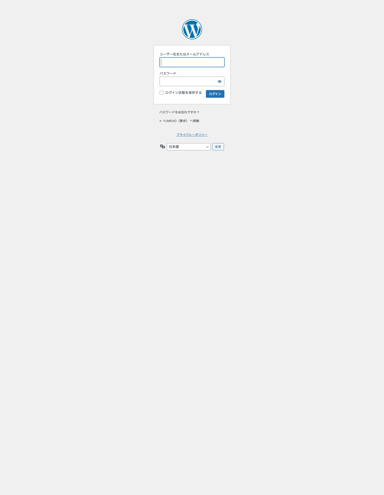
/wp-admin/
を開きます。ユーザー名またはメールアドレス と
パスワード を入力します。ログイン を押します。| 環境 | Rinascente | YUMEHO | 補足 |
|---|---|---|---|
| dev環境（確認用） | https://corp-dev.rinascenteyumeho.jp/wp-admin/ |
https://dev.rinascenteyumeho.jp/wp-admin/ |
公開まではベーシック認証あり |
| 本番環境ではこちら | https://onerinascente.co.jp/wp-admin/ |
https://rinascenteyumeho.jp/wp-admin/ |
公開後に使用 |
dev環境は公開までベーシック認証で保護されています。WordPress のログイン画面が出る前に、共有のベーシック認証 ID / PW の入力が必要です。
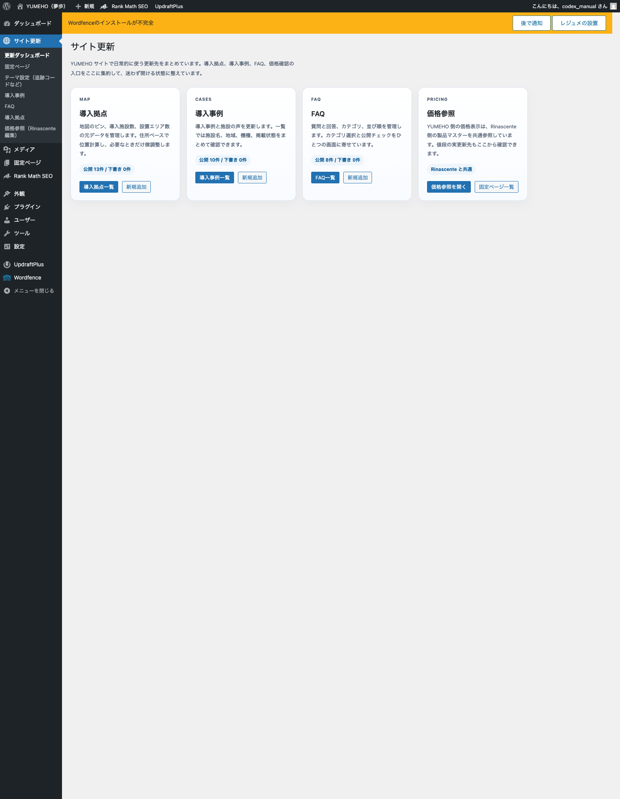
この画面は、YUMEHO の更新導線をまとめた入口です。迷ったらまずここを開いてください。
サイト更新 を開きます。| カード / 導線 | 使うとき |
|---|---|
| 導入事例 | 導入施設の事例を追加・修正したい |
| FAQ | よくある質問を追加・修正したい |
| 導入拠点 | 地図や導入件数の元データを更新したい |
| 固定ページ | 規約や法務ページ、FAQ導入文を変えたい |
| テーマ設定 | サイト全体の設定を変えたい |
| 価格参照 | 価格を確認したいが、編集は Rinascente 側で行う |
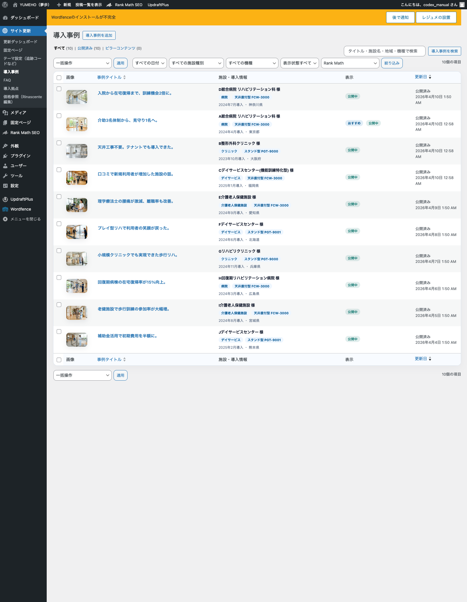
導入事例 を開きます。新規追加 を押します。| 確認項目 | 見るポイント |
|---|---|
| サムネイル | メイン画像が入っているか |
| タイトル | 施設名・機種が分かるか |
| 概要 | 施設種別や機種が想定どおりか |
| フラグ | おすすめ や 一覧非表示 の有無 |
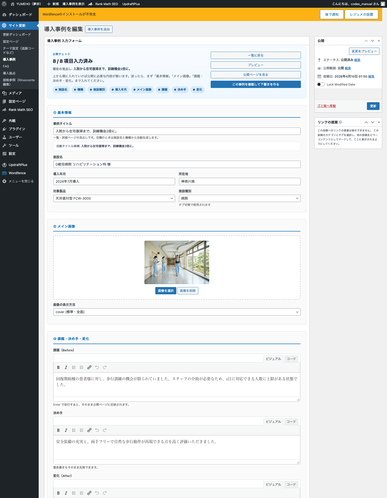
① 基本情報 を入力します。② メイン画像 で代表画像を設定します。③ 課題・決め手・変化 を入力します。④ 数値で見る変化、⑤ 経緯・お客様の声、⑥ 表示設定
を入力します。公開 または 更新 を押します。| セクション | 項目 | 使い方 |
|---|---|---|
| ① 基本情報 | 事例タイトル | 空欄でも可。未入力なら施設名と機種から自動生成 |
| ① 基本情報 | 施設名 | 一覧・詳細の主表示 |
| ① 基本情報 | 導入年月 | 例: 2025年4月導入 |
| ① 基本情報 | 所在地 | 例: 東京都 |
| ① 基本情報 | 対象製品 | 機種名を選択 |
| ① 基本情報 | 施設種別 | タブ切替や分類に使用 |
| ② メイン画像 | 画像を選択 | 一覧サムネイルと詳細の代表画像 |
| ② メイン画像 | 画像の表示方法 | cover / contain を選択 |
| ③ 課題・決め手・変化 | 課題 / 決め手 / 変化 | 公開ページの本文にそのまま反映 |
| ④ 数値で見る変化 | ラベル / 値 | 成果を3件まで表示可能 |
| ⑤ 経緯・お客様の声 | 導入決定までの経緯 / お客様の声 / 発言者 | 詳細ページの補足情報 |
| ⑥ 表示設定 | おすすめ事例として出す | トップなど優先表示 |
| ⑥ 表示設定 | 一覧には出さない | 詳細URLを残しつつ一覧から除外 |
施設名 対象製品
施設種別 導入年月 メイン画像
課題 決め手 変化
を埋めます。② メイン画像
だけ更新して問題ありません。この事例を複製して下書きを作る
を使うと早いです。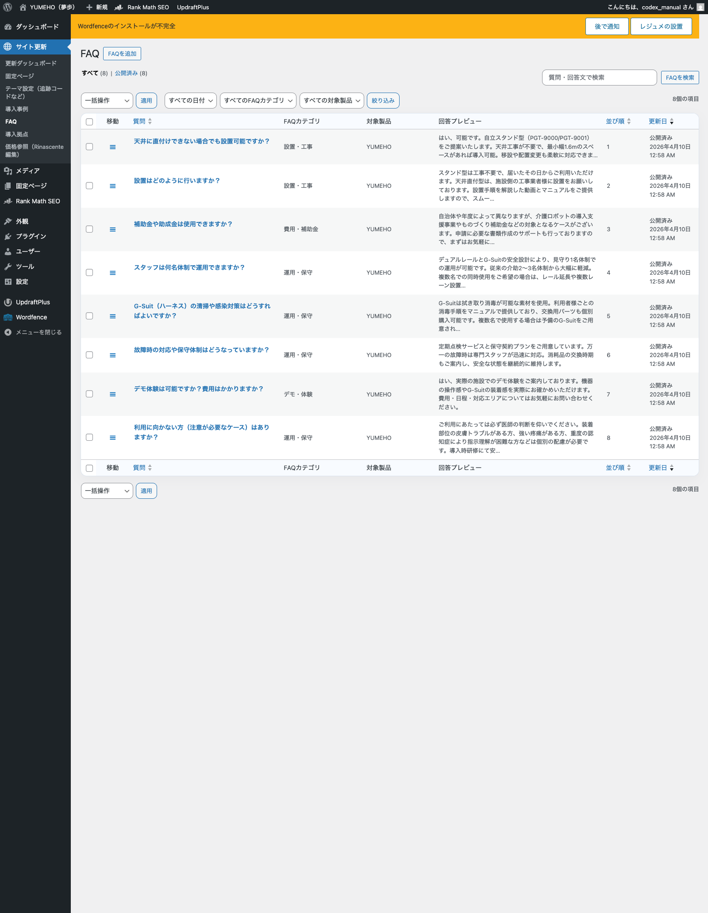
FAQ を開きます。新規追加 を押します。FAQカテゴリ、対象製品、回答要約、並び順
を確認します。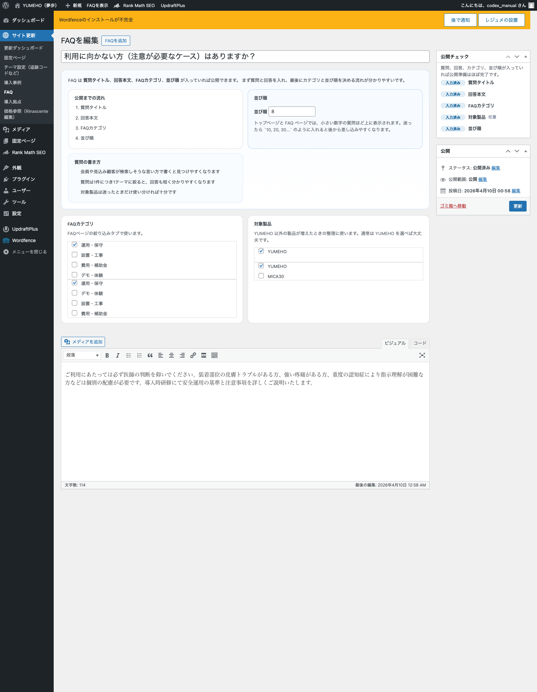
質問タイトル を入れます。回答本文 を入れます。FAQカテゴリ を選びます。対象製品 を選びます。並び順 を設定します。公開 または 更新 を押します。| 項目 | ルール |
|---|---|
| 質問タイトル | 1投稿につき1質問 |
| 回答本文 | そのまま公開ページの回答欄に出る |
| FAQカテゴリ | FAQページの絞り込みタブに使う |
| 対象製品 | 通常は YUMEHO を選べば問題なし |
| 並び順 | 小さい数字ほど上に表示 |
10, 20, 30... のように登録します。15 などを入れます。並び順 を基準にしてください。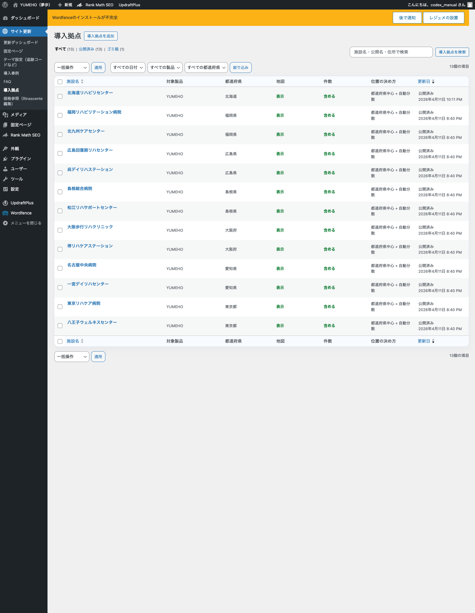
導入拠点 を開きます。新規追加 を押します。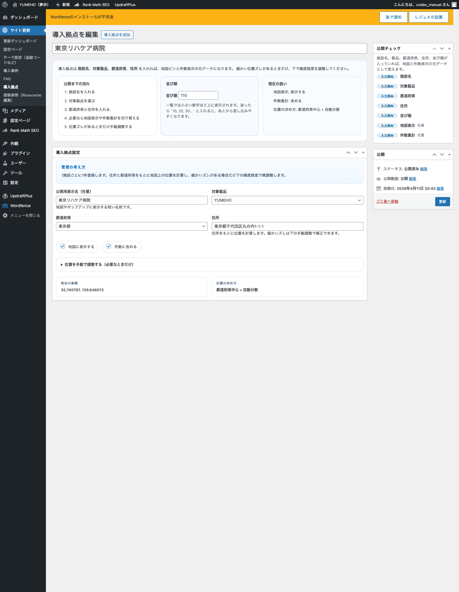
施設名 を入れます。対象製品 を選びます。都道府県 と 住所 を入力します。並び順 を設定します。地図に表示する と 件数に含める
を必要に応じて切り替えます。位置を手動で調整する
を開き、緯度経度を入力します。公開 または 更新 を押します。| 項目 | 必須 | 説明 |
|---|---|---|
| 施設名 | 必須 | 投稿タイトルに入力 |
| 対象製品 | 必須 | 地図の製品別集計に使う |
| 都道府県 | 必須 | 位置計算の基準 |
| 住所 | 必須 | 位置計算の基準 |
| 並び順 | 必須 | 一覧表示順 |
| 公開用表示名 | 任意 | 地図に短い名称で出したいとき |
| 地図に表示する | 任意 | オフでマップ非表示 |
| 件数に含める | 任意 | オフで件数カウント対象外 |
| 緯度 / 経度 | 任意 | 自動位置がずれたときだけ使う |
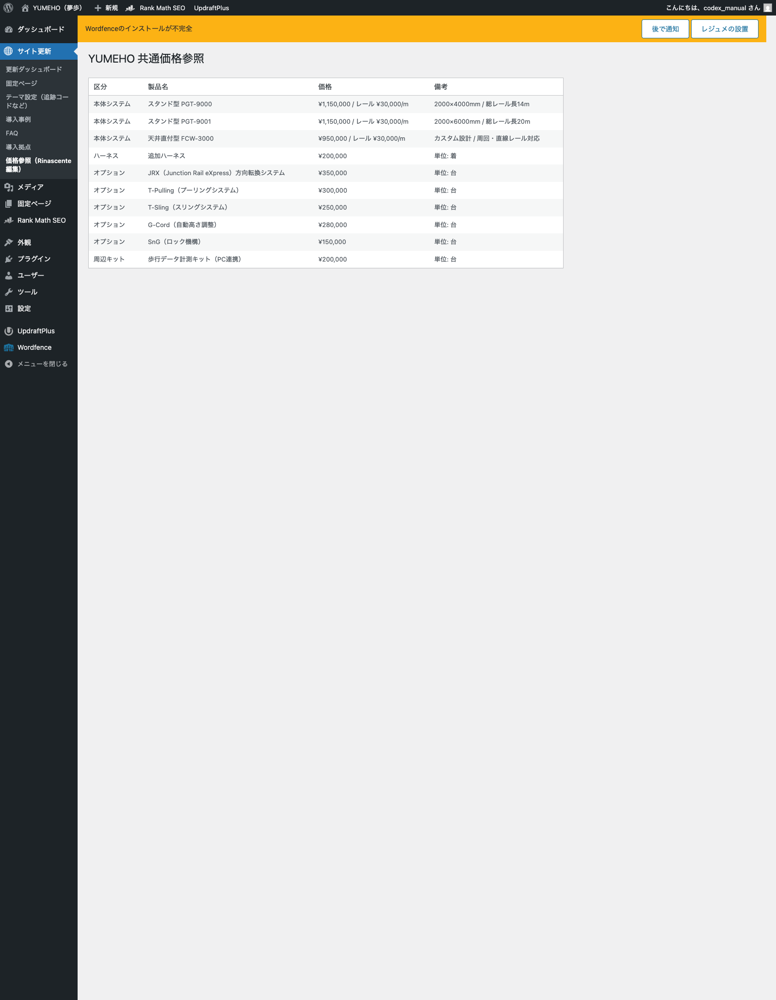
この画面は確認用です。YUMEHO 側で価格を直接編集する画面ではありません。
サイト更新 > 価格参照（Rinascente編集）
を開きます。Rinascente の製品マスターを開く を押します。5.6 製品マスターの更新 を参照します。| 更新したいもの | 実際の編集先 |
|---|---|
| YUMEHO の価格表 | Rinascente の 製品マスター |
| YUMEHO の見積シミュレーション | Rinascente の 製品マスター |
| 契約情報のひな形 | Rinascente の 製品マスター |
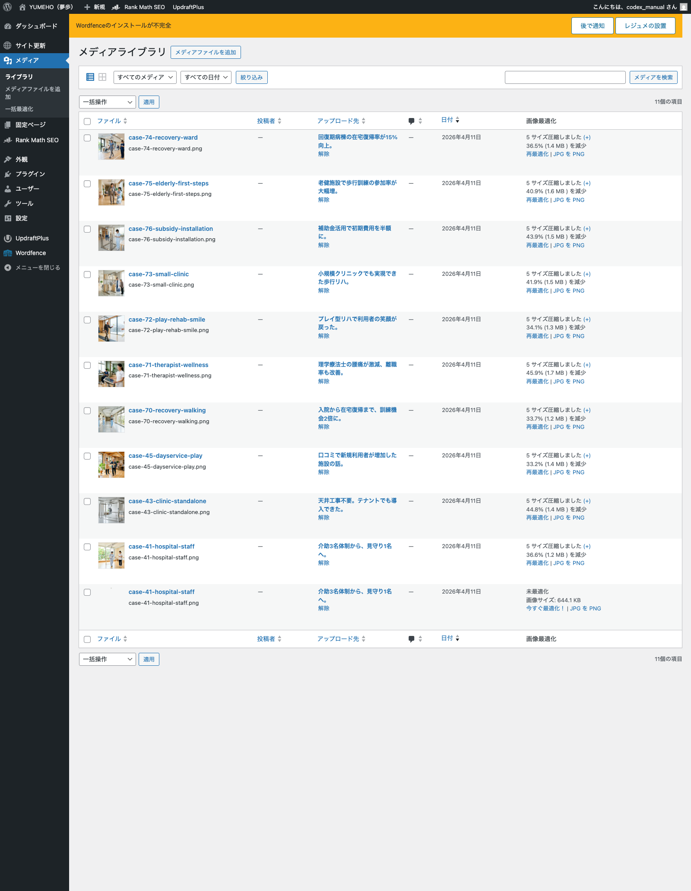
画像・PDF・資料ファイルをアップロードする共通画面です。操作は Rinascente 側でもほぼ同じです。
メディア を開きます。新規メディアファイルを追加
でファイルをアップロードします。| 用途 | 推奨 |
|---|---|
| 導入事例の代表画像 | 横長・明るめ・施設や製品が分かるもの |
| ニュース / コラムの代表画像 | 横長・一覧で内容が伝わるもの |
| PDF資料 | ファイル名を分かりやすくする |
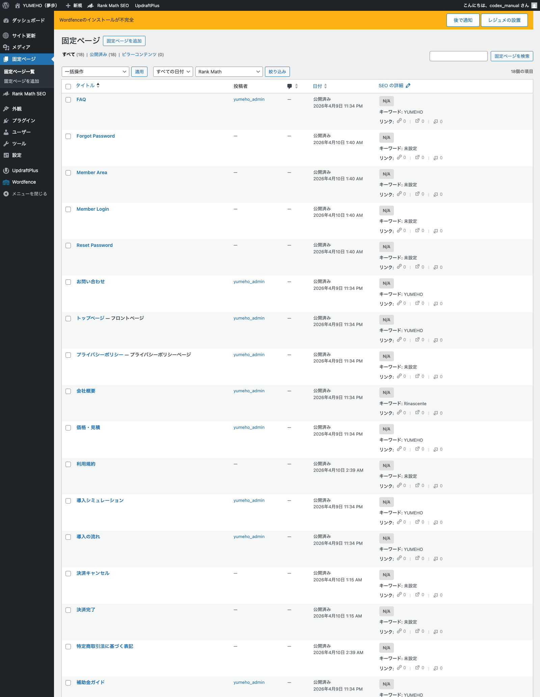
固定ページは全部が本文更新対象ではありません。次の表で使い分けてください。
| 固定ページ | 本文編集が反映されるか | 更新方法 |
|---|---|---|
| FAQ | 一部反映 | ページ上部導入文は本文、質問一覧は FAQ 投稿で更新 |
| プライバシーポリシー | 反映される | 本文を編集 |
| 利用規約 | 反映される | 本文を編集 |
| 特定商取引法に基づく表記 | 反映される | 本文を編集 |
| 会社概要 | 基本反映しない | Rinascente > 会社概要 を更新 |
| トップページ / 製品紹介 / 導入の流れ / 価格・見積 / 補助金ガイド / お問い合わせ | 基本反映しない | テンプレートまたは別機能を更新 |
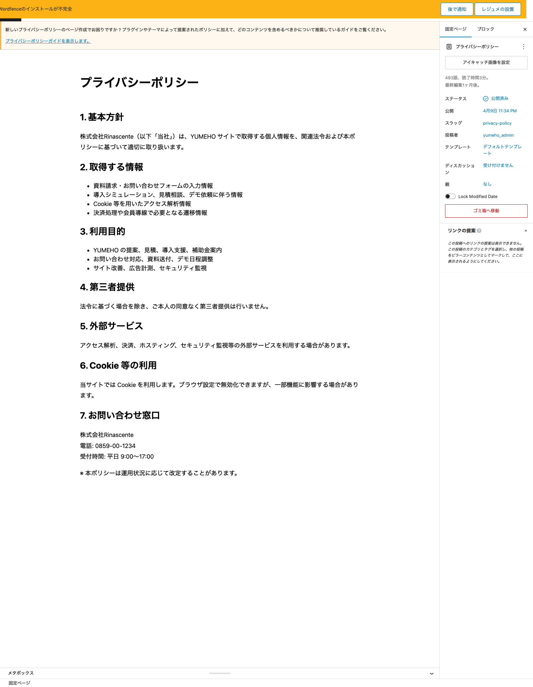
固定ページ から対象ページを開きます。更新 を押します。YUMEHO の 会社概要 ページに表示される会社情報は、現在
Rinascente の「会社概要」 を参照しています。
YUMEHO
側の固定ページ本文を直しても、会社名・住所・電話番号などの主要情報はここでは運用しません。
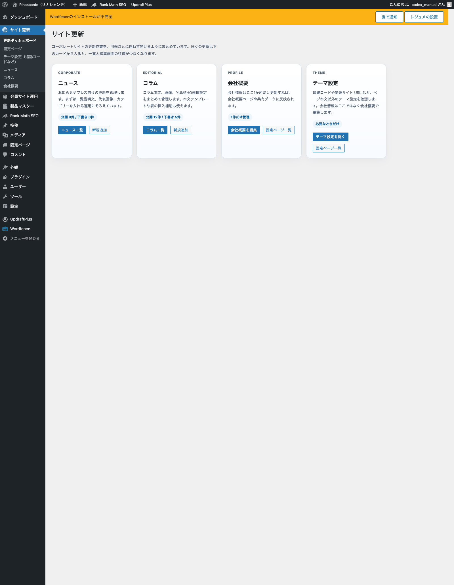
サイト更新 を開きます。| 導線 | 使うとき |
|---|---|
| ニュース | Press 更新 |
| コラム | コラム公開 |
| 会社概要 | 会社情報 / 問い合わせ先 / YUMEHO 会社情報更新 |
| 会員サイト運用 | 製品マスター / 契約 / 会員向けコンテンツ更新 |
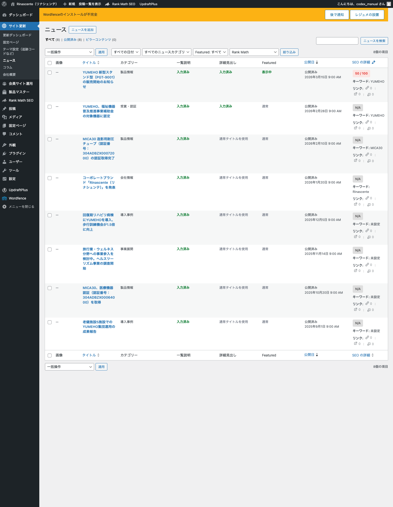
ニュース を開きます。新規追加 を押します。| 列 | 意味 |
|---|---|
| サムネイル | 代表画像の有無 |
| カテゴリー | ニュース分類 |
| 抜粋 | 一覧説明文の有無 |
| 表示タイトル | 詳細ページ専用タイトルの有無 |
| Featured | Press 先頭で強調表示されるか |
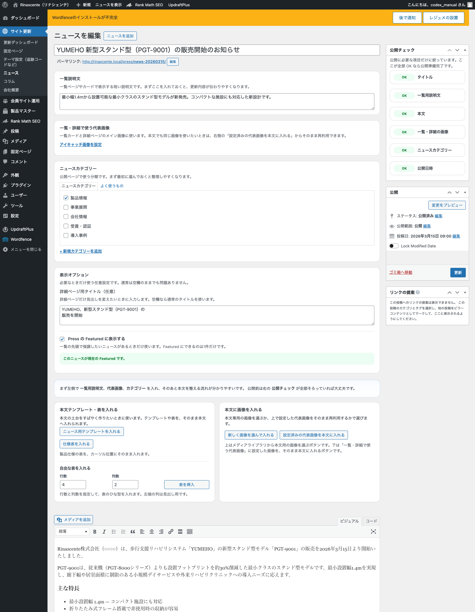
一覧説明文 を入力します。一覧・詳細で使う代表画像 を設定します。ニュースカテゴリー を選びます。詳細ページ用タイトル を入れます。Press の Featured に表示する をオンにします。公開 または 更新 を押します。| 項目 | ルール |
|---|---|
| タイトル | 一覧と詳細の基本タイトル |
| 一覧説明文 | Press 一覧カードで使う短文 |
| 本文 | 詳細ページ本文 |
| 代表画像 | 一覧カードと詳細のメイン画像 |
| 詳細ページ用タイトル | 任意。詳細だけ見出しを変えたいとき |
| Featured | 1件だけ。次をONにすると前のFeaturedは外れる |
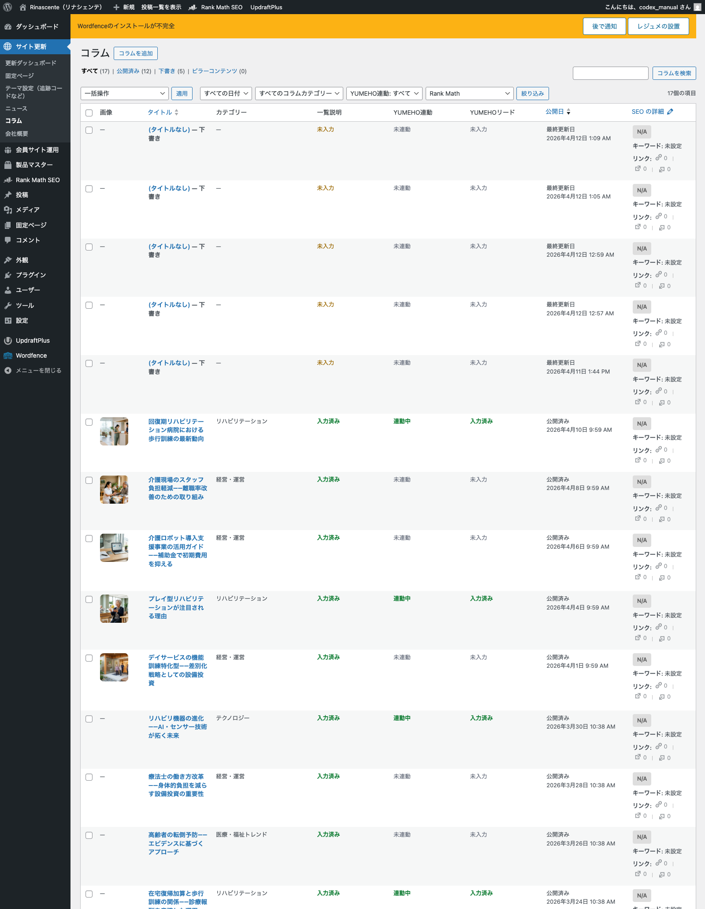
コラム を開きます。新規追加 を押します。YUMEHO連動 と YUMEHOリード
を特に確認します。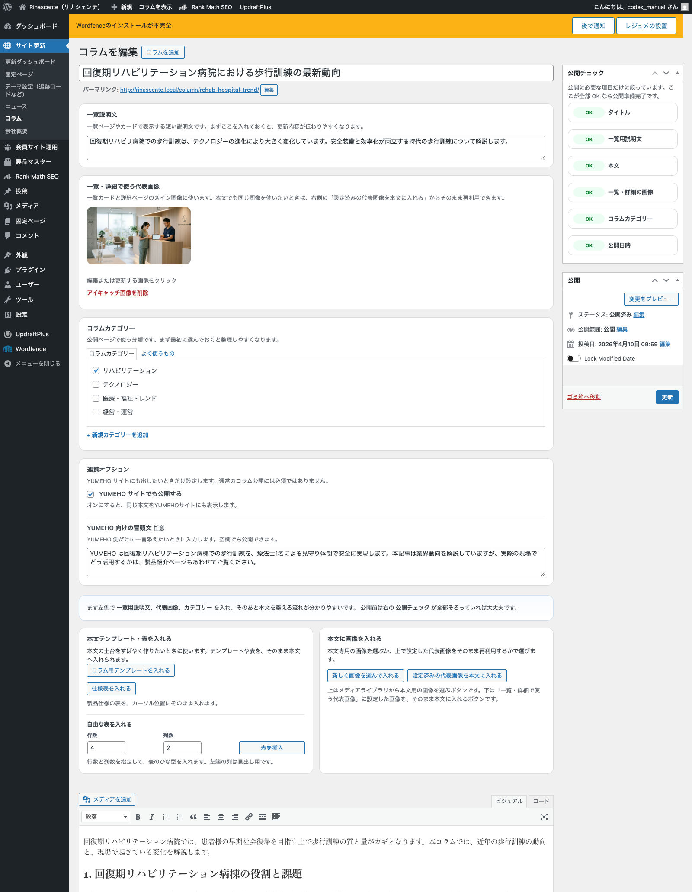
一覧説明文 を入力します。代表画像 を設定します。コラムカテゴリー を選びます。YUMEHO サイトでも公開する
をオンにします。YUMEHO 向けの冒頭文 を入れます。公開 または 更新 を押します。| 項目 | 説明 |
|---|---|
| YUMEHO サイトでも公開する | ON にすると YUMEHO 側でも同じ本文を表示 |
| YUMEHO 向けの冒頭文 | YUMEHO 側だけで見せる補足文 |
| 反映タイミング | 最大約15分 |
| 使いどころ | YUMEHO 利用者にも読ませたい製品寄りのコラム |
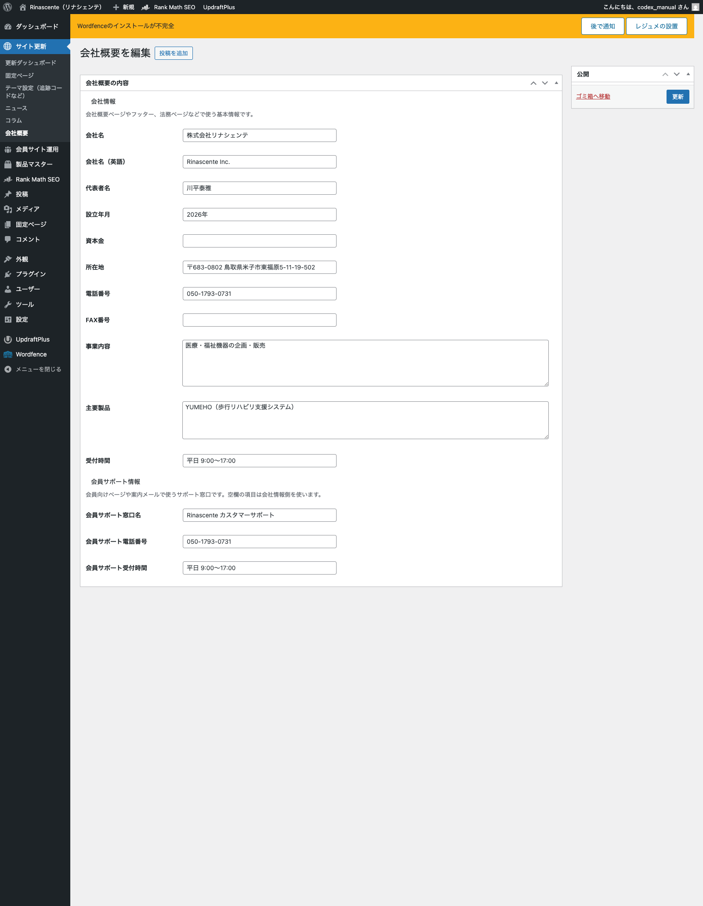
この画面は、Rinascente 自社情報の更新画面であると同時に、YUMEHO 会社概要の元データでもあります。
会社概要 を開きます。更新 を押します。| 区分 | 項目 |
|---|---|
| 会社情報 | 会社名 |
| 会社情報 | 会社名（英語） |
| 会社情報 | 代表者名 |
| 会社情報 | 設立年月 |
| 会社情報 | 資本金 |
| 会社情報 | 所在地 |
| 会社情報 | 電話番号 |
| 会社情報 | FAX番号 |
| 会社情報 | 事業内容 |
| 会社情報 | 主要製品 |
| 会社情報 | 受付時間 |
| サポート | 会員サポート窓口名 |
| サポート | 会員サポート電話番号 |
| サポート | 会員サポート受付時間 |
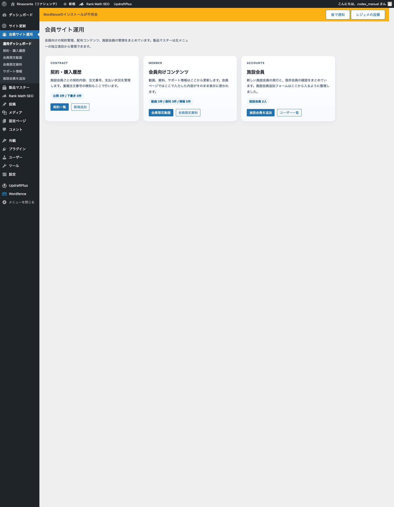
会員関連の更新は、この画面を起点にすると迷いません。
会員サイト運用 を開きます。| 画面 | 使うとき |
|---|---|
| 製品マスター | 商品名・価格・選択肢・契約ひな形を更新したい |
| 契約・購入履歴 | 会員別の購入履歴や契約状況を更新したい |
| 会員限定動画 | 会員向けの動画を追加したい |
| 会員限定資料 | 会員向けのPDFや資料を追加したい |
| サポート情報 | 会員向けのお知らせを出したい |
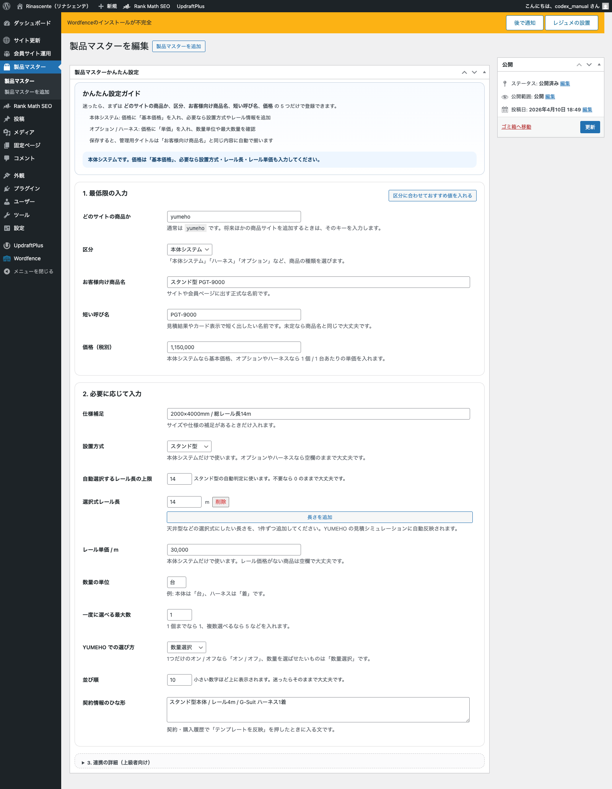
この画面は、YUMEHO の価格・見積・契約情報の元マスターです。価格変更時はここを更新します。
会員サイト運用 > 製品マスター を開きます。どのサイトの商品か 区分
お客様向け商品名 短い呼び名
価格（税別） を入力します。契約情報のひな形
を入れます。公開 または 更新 を押します。| セクション | 項目 | 使い方 |
|---|---|---|
| 最低限の入力 | どのサイトの商品か | 通常は yumeho |
| 最低限の入力 | 区分 | 本体システム / ハーネス / オプション等 |
| 最低限の入力 | お客様向け商品名 | サイト表示の正式名 |
| 最低限の入力 | 短い呼び名 | 見積やカードの短縮表示 |
| 最低限の入力 | 価格（税別） | 本体の基本価格または単価 |
| 必要に応じて入力 | 仕様補足 | サイズ・構成の補足 |
| 必要に応じて入力 | 設置方式 | 本体システム向け |
| 必要に応じて入力 | 自動選択するレール長の上限 | スタンド型判定等で使用 |
| 必要に応じて入力 | 選択式レール長 | 天井型などの長さ候補 |
| 必要に応じて入力 | レール単価 / m | レール課金時に使用 |
| 必要に応じて入力 | 数量の単位 | 台 / 着 / 個 など |
| 必要に応じて入力 | 一度に選べる最大数 | 1件の見積で選択できる数 |
| 必要に応じて入力 | YUMEHOでの選び方 | オン/オフ or 数量選択 |
| 必要に応じて入力 | 並び順 | 表示順 |
| 必要に応じて入力 | 契約情報のひな形 | 契約画面へ流し込む文面 |
| 上級者向け | 商品コード | 内部連携用の安定コード |
| 上級者向け | 価格連携キー | YUMEHO価格計算の内部キー |
| 上級者向け | 参照元メモ | 元資料のメモ |
| 変更内容 | 反映先 |
|---|---|
| 商品名 / 短縮名 | YUMEHO の価格・見積表示 |
| 価格 | YUMEHO の価格表 / 見積 / シミュレーション |
| 契約情報のひな形 | 契約・購入履歴のテンプレート反映 |
| レール長 / 数量設定 | YUMEHO の選択UI |
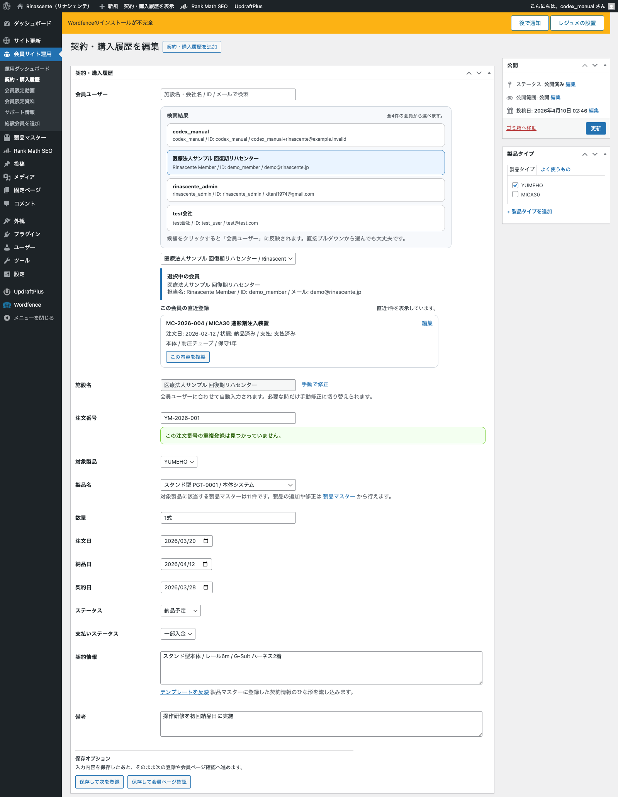
会員ページに表示する契約情報や購入履歴の管理画面です。
会員サイト運用 > 契約・購入履歴 を開きます。施設名 注文番号 対象製品
製品名 数量 を確認または入力します。注文日 納品日 契約日
を入れます。ステータス と 支払いステータス
を設定します。契約情報 と 備考
を入れます。更新 を押します。| 項目 | 説明 |
|---|---|
| 会員ユーザー | まずここを選ぶ。施設名が自動補完される |
| 施設名 | 通常は自動入力、必要時のみ手動修正 |
| 対象製品 | 製品グループ |
| 製品名 | 製品マスターから選択 |
| 契約情報 | 製品マスターのひな形を反映可能 |
| 備考 | 個別事情や運用メモ |
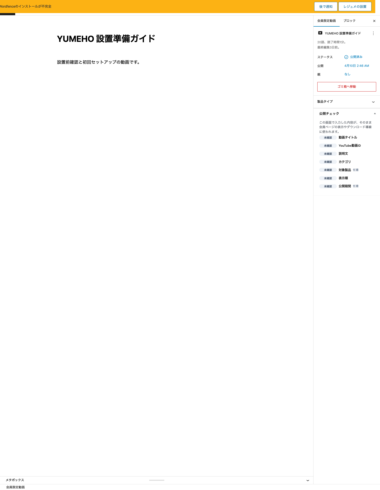
この画面は縦長で、スクリーンショットより下にも入力欄が続きます。実際の更新では、上から順に
動画情報 表示設定 公開期間
を埋めていきます。
会員サイト運用 > 会員限定動画 を開きます。YouTube URL または 動画ID を入力します。説明文 を入力します。カテゴリ と 対象製品 を設定します。公開開始日 と 公開終了日
を設定します。表示順 を調整します。公開 または 更新 を押します。| 項目 | ルール |
|---|---|
| YouTube入力 | 共有URLを貼っても可。保存時に動画IDへ整形 |
| 説明文 | 会員ページの一覧と詳細で使用 |
| 本文欄 | 現在の会員ページでは使わない |
| 表示順 | 小さい数字ほど上に表示 |
| 対象製品 | 空欄なら共通表示 |
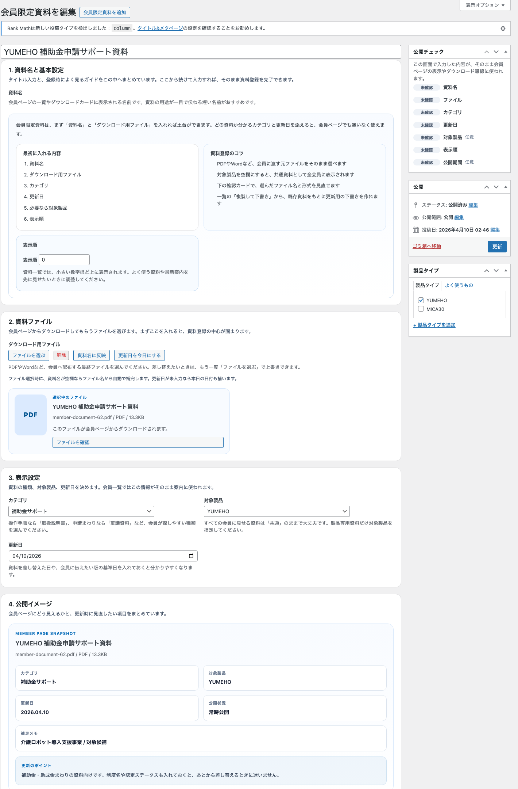
現在は、右下の矢印で切り替える方式ではなく、資料名と基本設定
から 公開期間
までを1画面で上から続けて入力します。タイトル欄も同じ流れの中に表示されます。
会員サイト運用 > 会員限定資料 を開きます。1. 資料名と基本設定 で資料名を入力し、必要なら
表示順 を調整します。2. 資料ファイル で ファイルを選ぶ から PDF
や Word を登録します。資料名に反映 と 更新日を今日にする
を使います。3. 表示設定 で
カテゴリ、対象製品、更新日
を設定します。4. 公開イメージ
で会員ページでの見え方を確認します。5. 制度・補助金メモ に
制度名 と 認定ステータス を入れます。6. 公開期間 で 公開開始日 と
公開終了日 を設定します。公開 または 更新 を押します。| 項目 | ルール |
|---|---|
| ファイル | 会員に配布する最終版を登録 |
| 更新日 | 差し替え日や版の基準日を入れる |
| 対象製品 | 空欄なら共通資料 |
| 画面構成 | タイトル欄と資料設定は同じ画面で続けて入力する |
| 本文欄 | 現在の会員ページでは使わない |
| 表示順 | 小さい数字ほど上に表示 |
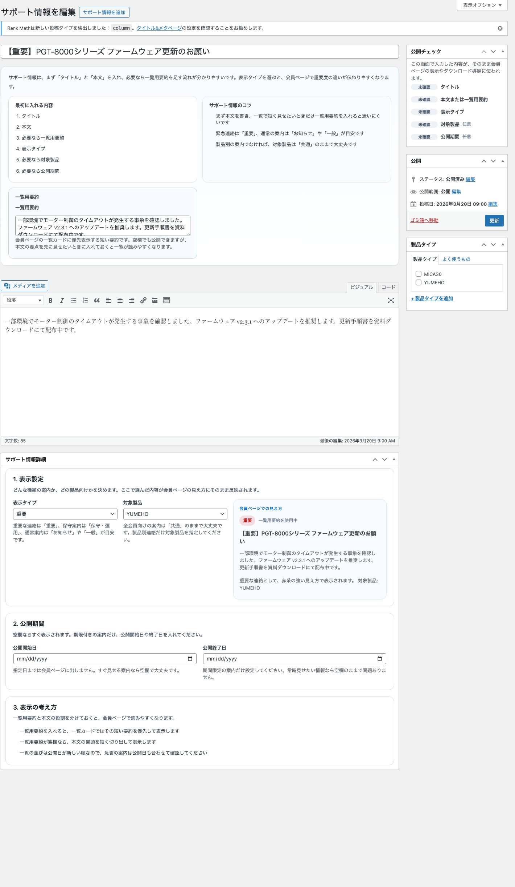
サポート情報は、タイトルと本文に加えて、見え方を決める
表示タイプ が重要です。
会員サイト運用 > サポート情報 を開きます。一覧用要約 を入れます。表示タイプ と 対象製品 を選びます。公開開始日 と 公開終了日
を設定します。公開 または 更新 を押します。| 項目 | ルール |
|---|---|
| 本文 | 会員ページ詳細の本文 |
| 一覧用要約 | 一覧カードに優先表示する短文 |
| 表示タイプ | 重要 保守・運用 お知らせ
一般 など、見え方を決める |
| 並び順 | 手動順ではなく公開日時の新しい順が基本 |
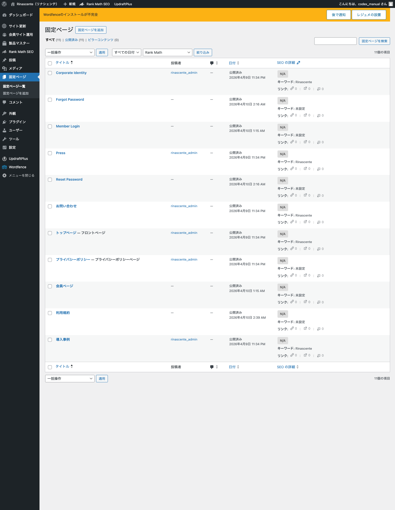
| 固定ページ | 本文編集が反映されるか | 更新方法 |
|---|---|---|
| プライバシーポリシー | 反映される | 本文を編集 |
| 利用規約 | 反映される | 本文を編集 |
| Press | 反映しない | ニュース 投稿で更新 |
| Corporate Identity | 一部のみ | 会社概要 更新 + テンプレート |
| トップページ / お問い合わせ | 基本反映しない | テンプレートまたは別機能 |
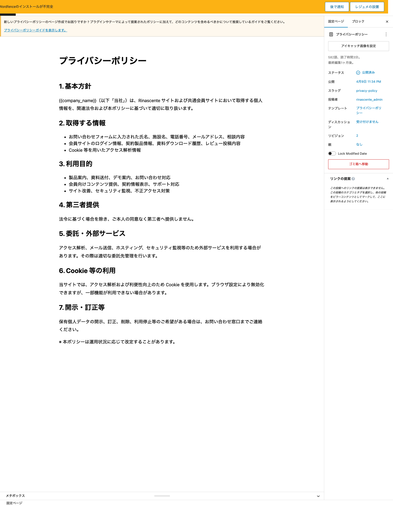
固定ページ から対象ページを開きます。更新 を押します。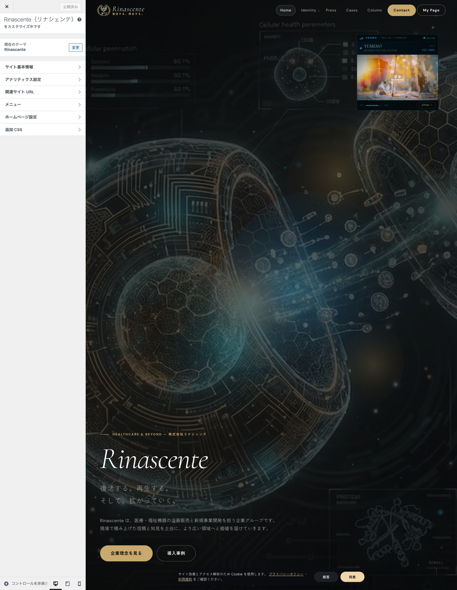
この画面はサイト全体に影響する設定画面です。通常運用では頻繁に触らず、変更目的がはっきりしているときだけ更新します。
外観 > カスタマイズ を開きます。公開 を押します。| セクション | 項目 |
|---|---|
| アナリティクス設定 | GA4 測定ID |
| アナリティクス設定 | GTM コンテナID |
| アナリティクス設定 | Slack Webhook URL |
| 関連サイト URL | YUMEHO サイト URL |
| 関連サイト URL | MICA30 サイト URL（有効時のみ） |
| 関連サイト URL | Basic認証 ID / PW |
| セクション | 項目 |
|---|---|
| アナリティクス設定 | GA4 Measurement ID |
| アナリティクス設定 | GTM Container ID |
| アナリティクス設定 | Slack Webhook URL |
| アナリティクス設定 または 導入拠点マップ設定 | Google Maps API Key |
| 関連サイト URL | コーポレートサイト URL |
| 関連サイト URL | Basic認証 ID / PW |
固定ページを開いて本文が編集できても、その本文が公開画面に使われていない
ページがあります。
迷ったら、次のルールで判断してください。
製品マスター
で更新したか。会社概要
で更新したか。共通 でよいか確認したか。表示タイプ が適切か。YUMEHO > 固定ページ > 会社概要
ではなく、Rinascente > 会社概要
を更新します。
YUMEHO > 価格参照 は確認画面です。
実際の更新先は
Rinascente > 会員サイト運用 > 製品マスター
です。
FAQそのものは FAQ 投稿で更新し、ページ上部の導入文は
YUMEHO > 固定ページ > FAQ
で更新します。
現在の運用では、会員限定動画・資料・サポート情報は Rinascente
側 の 会員サイト運用 で更新します。
そのページはテンプレート固定の可能性が高いです。
このマニュアルの 2. 公開ページごとの更新元マップ
を確認し、正しい更新元へ戻ってください。
次のような依頼は、WordPress 管理画面ではなく開発対応です。
文言 なのか 構造
なのか。必要な更新先が分からなくなった場合は、「固定ページ本文を直す前に、このマニュアルの早見表を見る」
を基本ルールにしてください。
特に YUMEHO の会社概要・価格・会員情報
は、更新元が別画面になっています。